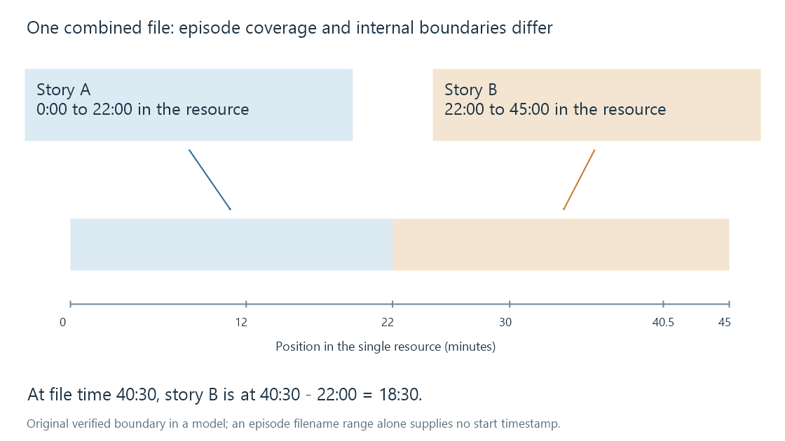

Multi-episode files
A multi-episode file stores material for several episodes in one media resource, requiring a distinction between catalogue coverage and internal playback boundaries.
A multi-episode file contains material corresponding to more than one episode. It might preserve a double-length broadcast, a disc programme combining two stories, or a recording that runs through several episodes.
The library needs to express what the file covers. A player additionally needs to know where each episode begins if it is to start a particular episode inside that resource. Those are separate kinds of information.
One range, one resource
An illustrative Emby naming form is:
Harbour Watch S01E01-E02.mkv
The TV Naming guide documents ranges for multiple episodes within the same season. The name expresses coverage of episodes 1 and 2. It does not change the container, create another file or insert a timestamp for the start of episode 2.

The diagram describes an original coverage model, not the exact item layout used by every server version.
A boundary must come from other evidence
Assume the fictional resource contains story A from 0:00 to 22:00 and story B from 22:00 to 45:00, with no extra material at the boundary.
| Position within the resource | Corresponding story position |
|---|---|
| 12:00 | Story A, 12:00 |
| 22:00 | Story B begins |
| 40:30 | Story B, 18:30 |
| 45:00 | Resource end |
The third row subtracts B's known start: 40:30 - 22:00 = 18:30.
Splitting the total duration in half would instead place the boundary at 22:30. That guess is wrong by 30 seconds because the stories have unequal lengths. Production logos, credits or interstitial material can produce further differences.
A chapter marker may identify a useful start, but “chapter 2” is not automatically “episode 2.” A feature can have many chapters, and a combined programme can have none. Exact episode boundaries require appropriately scoped metadata or content analysis, rather than a number extracted from the filename.
Metadata coverage can differ from programme segmentation
A catalogue may represent the broadcast as one combined episode, or describe its component stories separately. A disc release can choose another segmentation again. TheTVDB's multi-segment policy illustrates why both combined and separated arrangements exist.
A range against one arrangement is therefore not automatically a range against another. If the same file covers DVD programme X but aired episodes A and B, the mapping needs those actual entity relationships.
Emby's public item model includes an end index as well as an initial index. That can describe a numbered span. It does not by itself promise that the file contains corresponding internal chapter boundaries or that every app exposes independent playback of each covered episode.
The inverse of a multipart resource
| Resource relationship | Catalogue meaning |
|---|---|
| One file contains two episodes | Several episode identities or a covered span share a resource |
| Two files contain one movie | Sequential parts collectively represent one intended feature |
| Two files encode one episode | Alternative playable representations of an episode |
All three can involve the same number of filenames, but their playback logic differs. For alternatives, choose one complete representation. For sequential parts, traverse the necessary resources. For a combined resource, locate the relevant content within one timeline.
History and subtitles need that timeline
A file-relative resume point of 40:30 is unambiguous for the resource. Reporting it as 40:30 of story B would be wrong under the worked boundary. Treating the range as two ordinary independent 45-minute episodes would be wrong for a different reason: it invents two full resources.
Timed subtitles also normally refer to the combined file's presentation time unless a specific representation translates them. A cue at file minute 23 belongs after the second story begins in the example; subtracting 22 minutes only makes sense when converting to B's local timeline.